Founded in 1926 and headquartered in Norway, Jotun is one of the world's leading manufacturers of paints and coatings, operating in over 100 countries with more than 10,000 employees. In Vietnam, Jotun has been present since 1994 and is currently operating two factories, multiple sales offices, and distribution centers nationwide. Known for its commitment to quality, innovation, and people development, Jotun Vietnam is steadily building a strong foundation for sustainable growth through a human-centered approach.
At Jotun, workplace culture is more than a statement, it’s a way of life. The company’s guiding values: LOYALTY, CARE, RESPECT, and BOLDNESS. They are embedded in every policy, practice, and interaction. Together, these four pillars form the foundation of Jotun’s Penguin Spirit and define how the company empowers its people and drives long-term success.
Loyalty at Jotun is nurtured through trust, transparency, and alignment between employees and company goals. From the Leadership Expectations Model to the Jotun Value Chain, leadership development is integrated into every level of operations.
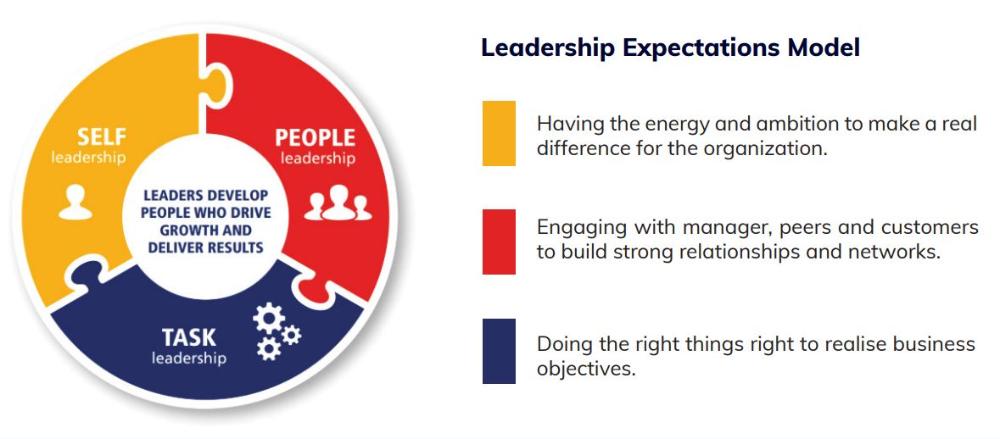
Annual From Strategy to Implementation workshops ensure that managers are not only aligned with business direction plans but also act as ambassadors of company culture. These initiatives promote strong internal relationships and a shared sense of ownership, contributing to low turnover and high engagement.

- From Strategy to Implementation Workshop is
conducted every year to align with the Group
Strategy and Regional & Company Direction Plans.
- Leadership and Management Workshops for
middle managers.
- A part of the Jotun Training Portfolio introduced
during an employee life circle.
Care at Jotun is both policy-driven and deeply personal. The Penguin CARE Program offers enhanced parental leave, caregiver support, and full healthcare coverage for employees’ families—including spouses and unlimited children.

Jotun’s commitment to holistic well-being shines through its Well-being Activities, another standout program in its award-winning culture. By addressing physical, mental, and social health, Jotun creates a workforce that’s not only productive but genuinely happy, reflecting their belief that a healthy employee is a thriving one.
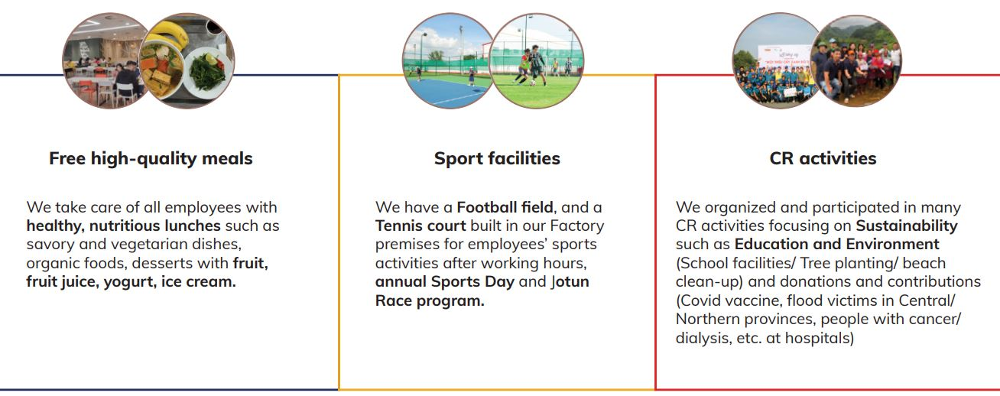
Respect is reflected in Jotun’s commitment to diversity, and inclusion. With female managers currently
making up 26% of the leadership team, the company actively works toward its Group target of 30% by 2030.
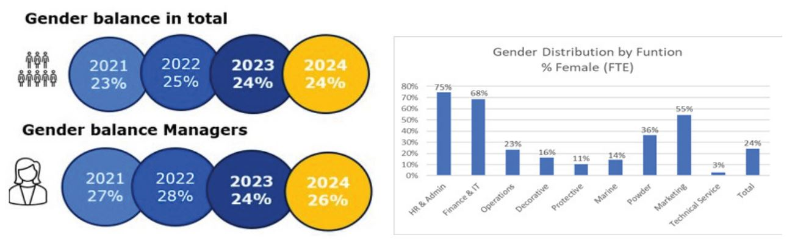
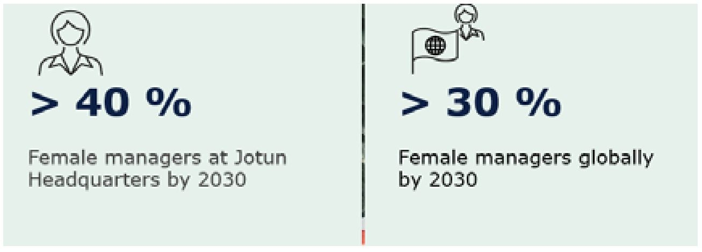
Jotun promotes inclusive hiring and conducts regular reviews to ensure gender balance across departments. Initiatives like the Jotun Academy, support employees of all backgrounds to grow and thrive in their careers, fostering mutual respect and empowerment.
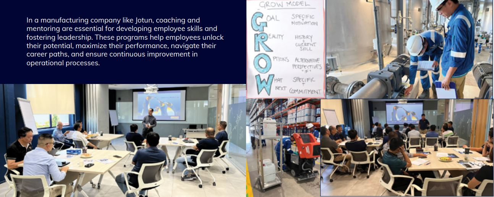
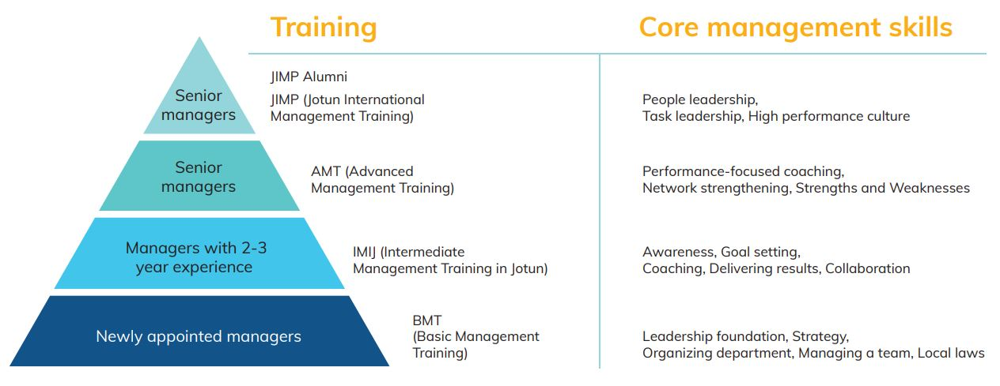
Jotun’s Global Mobility Program opens doors for employees to grow beyond borders. This program not only enhances skills but also fosters a sense of global unity within Jotun’s workforce. For a company with operations spanning Vietnam and beyond, this initiative ensures employees are equipped to handle diverse challenges while bringing fresh perspectives back home.
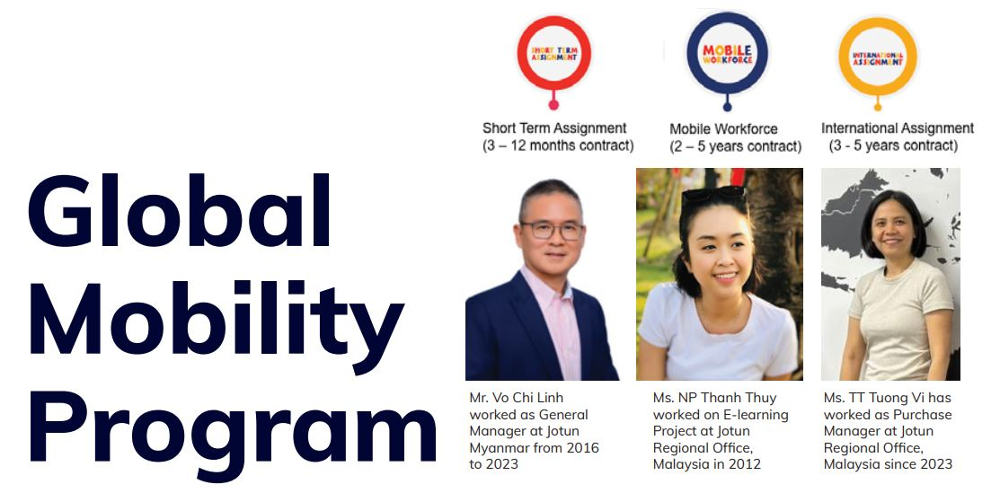
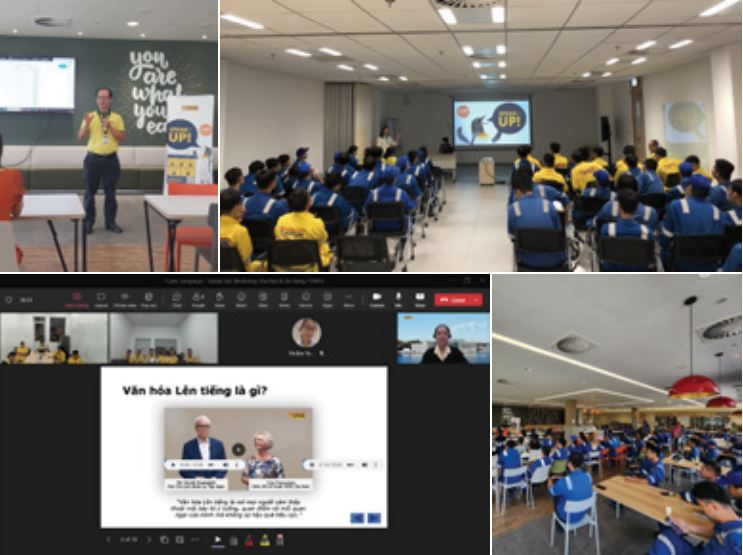
Boldness at Jotun means empowering people to speak up, take initiative, and innovate. The Speak-Up program, launched in 2023, provides a safe and structured platform for employees to share feedback and propose improvements. Ideas raised through this channel have led to tangible operational efficiency projects. Through Boldness, Jotun cultivates a culture where continuous improvement and open dialogue go hand in hand.
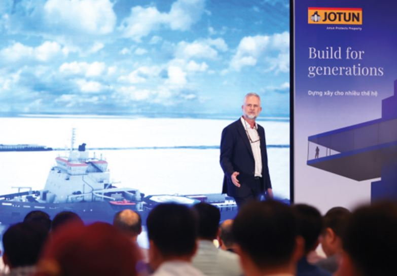
And perhaps most powerfully, boldness at Jotun fuels one of its greatest strengths: innovation - a natural outcome of Jotun’s people-centric culture. Employees are encouraged to think creatively and contribute ideas that enhance both customer experience and environmental responsibility. From Jotashield Infinity’s superior weather protection to Durasol powder coatings with multiple LEED certifications, product innovations are driven by a strong connection between R&D, operations, and market needs. This commitment to innovation not only strengthens business performance but also reinforces Jotun’s sustainability journey.
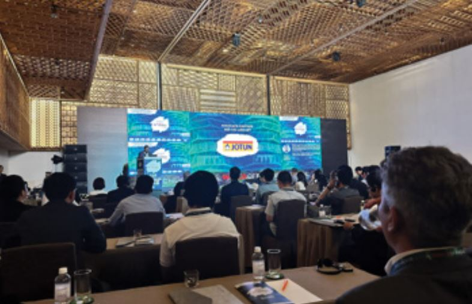

With a decade-long presence in Vietnam’s Top 100 Best Places to Work and recognition as the #1 Materials Manufacturer in 2024, Jotun exemplifies how a values-driven culture is not just good for people - it’s essential for long-term success. When culture is driven by values and people come first, success isn’t a destination, it’s a natural outcome!

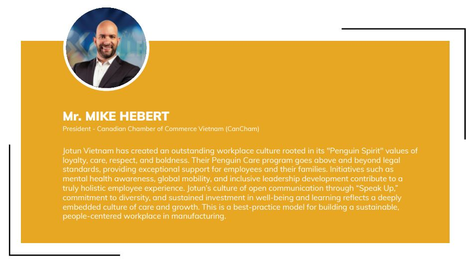
Tel: (028) 62682222 - EXT.122
(+84) 908 267 759
Email: clientsolution@anphabe.com
Follow us